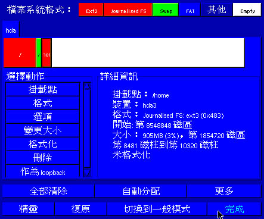

|
|
||||||||||||||
since2012/04/23 |
 |
|
||||||||||||
 |
|
|
|
|
||||||||||
|
|
|
|
|
|||||||||||
|
|
|
|
||||||||||||
|
|
|
|
|
|
|
|
|
|
|
|
|
|
|
|
最近更新日期：2003/02/05
Linux 安装的第一步『规划』
硬盘分割之配置
Linux 安装前准备
一个 Linux 安装实例
多重引导安装流程与技巧
课后练习
Linux 安装的第一步『规划』
由第二章的内容我们大致上可以了解：『Linux 主机的配备要求与 Linux 主机所提供的服务有关』，所以啰，要安装 Linux 的第一步就是先进行 Linux 主机的未来蓝图规划啦！那么该如何规划？由第二章的内容，我们不难了解，要规划好一个 Linux 主机的话，需要：好了，既然已经知道大概需要规划的原理之后，底下我们就实地的来操练一遍吧！好让您不会很快的忘掉去！
- 决定 Linux 主机的角色定位；
- 根据步骤一，选择适当的硬件配备；
- 根据步骤一，决定实体硬盘的分割状态；
- 根据主机上面的操作系统，选择适当的启动加载程序 ( boot loader ) ，以便安装在主要启动扇区中 ( Master Boot Recorder, MBR )；
- 根据步骤一，选择所需要的 Linux 程序套件；
- 假设：我是我们宿舍的代表，由于同住的校外宿舍同学需要上网缴交作业，但是该宿舍只有一条电话线，因此希望以
ADSL 来做为网络联机的方式。也就是说，我们宿舍里面要安装一部 Linux 主机来做为带宽分享的机器，同时，这部
Linux 主机预计也要做为我们宿舍里面 20 个人的邮件主机，与网页空间服务器，请问我该如何规划我的
Linux 主机呢？
- Linux 主机的角色定位：
- 硬件的配备选择：
- 主板与 CPU ：CPU 只要比 P-166 好即可，而主板需要与 CPU 形式配合。此外，选择淘汰的计算机配备来安装就很好了；
- 内存：使用 64 MB 以上的 RAM ，如果未来网页空间的流量太大时，可能需要提升内存到 256 MB 以上，所以需要预留内存插槽；
- 硬盘：硬盘至少需要 3.2 GB 以上的 IDE 硬盘；
- 网络卡：网络卡预计使用螃蟹卡；
- 显示适配器：由于这部机器本身是做为主机之用，所以不需要 X-Window ，因此显示适配器使用的是 S3 Virge 的 PCI 显示适配器；
- 安装过程中需要的装置：键盘、屏幕、光驱、软盘驱动器等等，这些装置在安装完成 Linux 之后，即可马上拔掉！
- 关于硬盘分割的分配：
- /
- /var/spool/mail
- /home
- swap
- 选择 MBR 当中的开机管理程序：
- 选择所需套件：
由上面的说明，可以知道 Linux 主机的服务主要有 NAT ( Network Address Transfer ) 这个带宽分享的机制、邮件服务与 Web 空间提供等等，此外，为了以后方便系统升级与安装其他套件，因此需要安装一些工具软件，例如 gcc 这个编译程序与 kernel-header 或 kernel-source 等等套件。
由于服务的对象并不多，加上主机的服务当中，需要 CPU 运算的地方较少，不过呢，由于我需要提供每个人的磁盘使用空间，并且还要提供使用者的邮件空间，所以硬盘方面可能需要大一点容量才行。所以我的硬件配备可以是：
由于我们的 Linux 主机要用做网页空间与邮件主机，所以如果为了安全起见，最好将放置网页的目录与放置邮件的目录安置在不同的扇区中，因此总共规划为四个扇区，分别为：
特别注意到，硬盘分割的分配与你的主机规划相关性最高了，在下一节当中，我们会更仔细的介绍硬盘分割的基本原理与步骤！而至于各个目录与扇区的相对应关系，我们将在磁盘文件系统进行说明，请莫着急呦 ^_^ ！
在 Linux 里面默认使用两种开机管理程序，分别是 LILO 与 GRUB 这两个好东西，其中， LILO 算是比较早期的开机管理程序，不过， VBird 个人倒是还蛮喜欢 LILO 的，毕竟他虽然比较死板，但是还蛮好用的，磁盘代号设定上面与 Linux 上的磁盘代号相同，所以没有什么太大的困扰。而较新的 GRUB 其实是很棒的一套开机管理程序，我个人认为，他最大的功能也最具魅力的地方是具有『动态搜寻核心档案』的功能，他可以让您在开机的时候，可以自行编辑您的 开机设定系统档案，呵呵！所以即使您不小心设定错了 grub ，没关系！开机的时候自行编辑一下就好啦！这方面的技巧，我们会在开机流程与 Loader 的时候再来详细的介绍，还是慢慢的从头学习起来呦！
由于将光盘上面的全部套件都安装，是有点浪费硬盘空间，当然如果您是要练习 Linux 的话，那么还是完整的都给他安装下去的好。由于我们需要 Web 与邮件，所以需要特别加选这两个套件来安装，此外，由于默认的安装项目并不包含 gcc, kernel-headers 等对于自行编译程序者而言相当重要的套件，所以我们也要额外加选这些项目！
到了这一步之后，嘿嘿！规划就已经差不多了，所以，这个时候，基本上已经可以开始来安装 Linux 啦！但是，还是有个困扰耶，那就是，在第三步骤的时候，我要怎么在安装的时候分割我的硬盘呀！？第二章里面有提过硬盘的扁平电缆与硬盘在 Linux 里面的磁盘代号有关，那么该如何分割？另外，有什么自定义的方式可以来帮我分割硬盘吗？呵呵！底下我们就来提一提如何
硬盘分割之配置
硬盘分割与配置的好坏，会影响到未来您的主机的使用情况，此外，好一点的分割方式，会让您的数据保有一定的安全性！怎么说呢？这么想好了，如果你的 Windows 硬盘里面，仅有 C 槽的话，那么当 Windows 需要重新安装的时候，你又想要重新格式化 ( format ) 时，而 C 槽里面很不巧的，已经放了很多重要的档案数据，这个时候怎么办？光是搬这些重要数据到其他空间就受不了！所以，比较聪明的玩家，都喜欢分割成两槽以上，将系统档案与数据文件分开，可以达到比较好的管理效果！
所以啰，正常使用情况下的 Linux 主机，通常会依照目录与主机的特性，来分割硬盘，以达到比较好的管理成效。不过，由于 Linux 的硬盘分割比较具有弹性，同时， Linux 硬盘分割程序 fdisk 功能很强悍，此外，要分割的好，必须要了解一下基础的硬盘架构，所以，底下我们先来介绍一下硬盘的基本架构，然后再来介绍如何分割吧！
- 硬盘连接扁平电缆与硬盘代号：
通常在 586 之后生产的主板上面都有两条接扁平电缆的界面 ( 扁平电缆就是用来连接硬盘与主板的那一个东西啦！ )，而我们称这种界面为 IDE 界面，这也是目前的主流硬盘界面，为了区隔硬盘读取的先后顺序，所以主板上面的这两个界面就分别被称为 Primary ( 主要的 ) 与 Secondary ( 次要的 ) IDE 接口啰，或者被称为 IDE1 ( Primary ) 与 IDE2 ( Secondary )。而如果你有仔细观察的话，那么每一条扁平电缆上面还有两个插孔，也就是说一条扁平电缆可以接两个 IDE 界面的装置 ( 硬盘或光驱 )，而你有两条扁平电缆，因此一个主板在预设的情况中，应该都可以接四个 IDE 界面的装置。好了，那么每条扁平电缆上面该如何判别哪一个是主硬盘 ( Master )，哪一个是副硬盘 ( Slave ) 呢？这个时候就需要调整硬盘上面的跳针 ( jump ) 才可以知道！请察看一下您的硬盘机吧！上面应该都会有图示说明才对。好了，所以如果我有一个光驱了，那么我最多就只能再安装三部 IDE 接口的硬盘在我的主机上面。OK！那么由于我的硬盘与 Linux 的磁盘代号有关，那么我怎么知道这个硬盘的代号呢？没问题啦，由 IDE 1 ( Primary IDE ) 的 Master 硬盘先计算，最后是 IDE 2 的 slave 硬盘，所以各个磁盘的代号是：
|
|
|
|
|
|
|
|
|
|
|
|
假如我只有一颗硬盘，而且这一颗硬盘接在 IDE 2 的 Master 上面，那么他在
Linux 里面的代号就是 /dev/hdc 啰！OK！好像没问题了呦！呵呵！才不是呢，问题很大呦！因为，如果我这个磁盘被分割成两槽，那么每一槽在
Linux 里面的代号又是如何？注意！基本上，在 Linux 底下我们不是用 槽 为单位，而是以
partition ( 磁盘分区区块 ) 来说明！所以啰，如何知道每个 partition 的代号呢？
- 认识硬盘：
基本上，硬盘是由最小的组成单位 扇区 ( sector ) 所组成的，而数个扇区组成一个磁柱 ( cylinder ) ，最后构成整个硬盘的容量大小。关于硬盘的管理我们在后续章节再来介绍，这里我们比较想要知道的是，如何分割硬盘，所以先简单的将硬盘变成如下的图标：
在上面的图示中，我们可以很清楚的知道，在硬盘里面有分为两个区域，一个是放置这个硬盘的信息区，我们称为 Master Boot Recorder, MBR ( 主要启动扇区 )，一个则是实际档案数据放置的地方。MBR 可以说是整个硬盘最重要的地方了，因为在 MBR 里面记录了两个重要的东西，分别是：开机管理程序，与磁盘分区表 ( partition table )。因此，只要 MBR 物理实体坏掉了，那么这颗硬盘就差不多要报废了！因为，如果系统找不到 partition table ，就无法使用这块硬盘，所以数据即使没有丢掉，但是没有 MBR ，呵呵，还是不能使用的啦！
- 首先来看一看什么是 partition table 呢？简单的说，我们说的『硬盘分割』就是在修改这个
partition table 而已！他基本上定义了『第 n 个磁盘区块是由第
x 磁柱到第 y 个磁柱』，所以，每次当系统要去读取 n 磁盘区块时，就只会去读取第
x 到 y 个扇区之间的数据！呵呵！这样知道了吗？很简单吧！下次记得人家在谈磁盘分区的时候，不要以为系统真的会在硬盘上面用力、努力的划标签！实际上，他最大的功能就是修改
MBR 里面的 partition table 啦！不过，由于这个 MBR 区块的容量有限，所以，当初设计的时候，就只有设计成
4 个分割纪录，这些分割记录就被称为 Primary ( 主分割 ) 及 Extended ( 延伸分割
) ，也就是说，一颗硬盘最多可以有 4 个 Primary
+ Extended 的扇区，其中， Extended 只能有一个，因此，你如果要分割成四块磁盘分区的话，那么最多就是可以：
- P ＋ P ＋ P ＋ P
P ＋ P ＋ P ＋ E
的情况来分割了。其中需要特别留意的是，如果上面的情况中， 3P +E 只有三个『可用』的磁盘，如果要四个都『可用』，就得分割成 4P 了！( 因为 Extended 不能直接被使用，还需要分割成 Logical 才行，底下我们会继续说明的！ )。那么为什么要有 Extended 呢？这是因为如果我们要将硬盘分割成 5 的磁块的话，那么怎么办？这个时候就需要 Extended 的帮忙了，本身 Extended 是不能在任何系统上面被使用的，还需要再额外的将 Extended 分割成 Logical ( 逻辑 ) 分割才能被使用，所以啰，藉由这个 Extended 的帮忙，我们就可以分割超过 5 个可以利用的 partition 啰！不过，在实际的分割时，还是容易出现问题的，底下我们来思考看看：
- 思考一：如果我要将我的大硬盘『暂时』分割成四个 partition ，同时，还有其他的空间可以让我在未来的时候进行规划，那么该如何分割？
- 思考二：我可不可以仅分割 1 个 Primary 与 1 个 Extended 呢？
- 思考三：假如我的硬盘安装在 IDE 1 的 Master ，并且我想要分割成 6 个可以使用的硬盘扇区，那么每个磁盘在 Linux 底下的代号为何？
说明：
- 由刚刚的说明，我们可以知道， Primary + Extended 最多只能有四个 partition，而如果要超过
5 个 partition 的话，那么就需要 Extended 的帮忙。因此，在这个例子中，我们『千万不能分割成四个
Primary 』为什么呢？假如您是一个 20 GB 的硬盘，而 4 个 primary 共用去了
15 GB ，您心想还有 5 GB 可以利用对吧？错！剩下的 5 GB 『完全不能使用』，这是因为已经没有多余的
partition table 纪录区可以记录了，因此也就无法进行额外的分割，当然啰，空间也就被浪费掉了！因此，请千万注意，如果您要分割超过
4 槽以上时，请记得一定要有 Extended 分割区，而且必须将所有剩下的空间都分配给
Extended ，然后再以 logical 的分割区来规划 Extended 的空间。
说明：
- 当然可以！基本上， Logical 可以有 64 个，因此，你可以仅分割一个主分割，并且将所有其他的分割都给
Extended ，利用 Logical 分割来进行其他的 partition 规划即可！
说明：
- 由于硬盘在 Primary ＋ Extended 最多可以有四个，因此，在 Linux 底下，已经将
partition table 1 ~ 4 先留下来了，如果只用了 2 个 P + E 的话，那么将会空出两个
partition number 呦！再详细的说明一下，假设我将四个 P + E 都用完了，那么硬盘的实际分割会如同下图所示：

实际可以使用的是 /dev/hda1, /dev/hda2, /dev/hda3, /dev/hda5, /dev/hda6, /dev/hda7 这六个 partition！至于 /dev/hda4 这个 Extended 扇区本身仅是用来规划出让 Logical 可以利用的磁盘空间而已！
那么万一我只想要分割 1 个 Primary 与 1 个 Extended 呢？这个时候你的磁盘分区会变成如下所示：
注意到了吗？因为 1~4 号已经被预留下来了，所以第一个
Logical 的代号由 5 号开始计算起来，而后面在被规划的，就以累加的方式增加磁盘代号啰！而其中
/dev/hda3, /dev/hda4 则是空的，被保留下来的代号。
Linux 安装前准备
一个 Linux 安装实例
- Linux 底下的硬盘分割模式选择注意事项：
- 自定义安装『Custom』：
- A：初次接触 Linux ：只要切割『 / 』及『 Swap 』即可！
- B：建议分割的方法：预留一个备份的扇区！
- 选择 Linux 安装程序提供的的硬盘分割方式：
实际上，在 Linux 安装的时候，已经提供了相当多的默认模式让您选择分割的方式了，不过，无论如何，分割的行为都不是很能符合自己主机的样子！因为毕竟每个人的『想法』都不太一样！因此，强烈建议使用『自定义安装, Custom 』这个安装模式！在某些 Linux distribution 中，会将这个模式写的很厉害，叫做是『 Expert, 专家模式 』，这个就厉害了，请相信您自己，了解上面就自称为 专家 了吧！没有问题！
好了，通常初次安装 Linux 系统的朋友们，我们都会建议他直接以一个最大的扇区『 / 』来安装，这样有个好处，就是不怕分割错误造成无法安装的困境！例如 /usr/ 是 Linux 的可执行程序及相关的文件摆放的目录，所以他的容量需求蛮大的，万一你分割了一块扇区给 /usr ，但是却给的不够大，那么就伤脑筋了！因为会造成无法将数据完全写入的问题，就有可能会无法安装啦！因此上，如果你是初次安装的话，那么可以仅分割成两个扇区『 / 与 Swap 』即可！
就如同前面几个心得分享文章中提到的，由于 Linux 默认的目录是固定的，所以，通常我们会将 /var 及 /home 这两个目录稍微加大一些，如果硬盘够大的话，加个几 GB 也不为过！另外， /usr 至少给他 3~5 GB 吧，如果硬盘真的大的话！而 / 也可以给个几 GB 的空间。最后，由于我们的 Linux 可能是在『试用』阶段，所以很有可能会重复的一再安装，因此上， VBird 都会预留一个扇区来备份我的核心啦与实作过程中觉得不错的 scripts ( 就有点像 DOS 的批处理文件 ) ，当然，我的 /home 底下的咚咚也可以有备份的地方，而安装套件的源文件也可以摆在这里！有个最大的好处是，当我的 Linux 重新安装的时候，我的一些套件马上就可以直接在硬盘当中找到！呵呵！重新安装比较便利啦！
对于首次接触 Linux 的朋友们，通常不建议使用各个 distribution 所提供预设的 Server 安装方式，因为会让你无法得知 Linux 在搞什么鬼，而且也不见得可以符合你的需求！注意：选择 Server 的时候，请『确定』您的硬盘数据是不要的！因为 Linux 会自动的把你的硬盘里面旧有的数据全部杀掉！此外，硬盘至少需要 2 GB 以上才可以选择这一个模式！
Linux 安装前准备
Linux 安装之前要准备什么呢？就是刚刚前面已经讲过的几个咚咚啦！归纳一下：然后，其实各个套件的安装步骤都差不多，大概都是：
- Linux 主机规划单：就是刚刚我们规划好的那个单据啰！
- Linux distribution ：利用一些映象站台下载各版本的 Linux ，或者直接以本书提供的三块 CD 装的 Mandrake 进行安装啰！
- 主机硬件信息收集：根据主机规划单的内容，去收集一下你的硬件信息吧！其中特别重要的是，先检查一下是否可以使用光盘开机呢？如果 BIOS 不能支持光盘开机的话，那么就需要先行安装可开机软盘。
- 网络硬件联机：这部份本书先不谈，否则内容就太多了，阿！再写下去鸟哥会疯掉……所以请大家先上网查阅一下网络的硬件联机吧！
- 网络信息：包括你的 IP, netmask, gateway, dns IP 、是否为拨接等等，都需要先知道呦！
大概就是这样子吧！好了，底下我们就真的要来安装啰！
- A. 选择安装模式：主要分为图形接口安装与文字接口安装；如果是图形接口安装的话，还可以选择语系，这个时候我们就有中文可以使用啦！
- B. 搜寻硬件信息：然后安装程序会去搜寻一下系统的硬设备，以利后续的处理，有的安装程序会在这个地方让您加入一些参数，以驱动不明的装置设备；
- C. 设定键盘、鼠标模式：这个可是很重要的项目呀！
- D. 硬盘分割设定：就是刚刚提到的几个注意事项；
- E. 套件选择：这是很重要的部分呢！请特别留意！
- F. 网络与安全性设定：连上 Internet 的模式与驱动网络卡的方式等设定；
- G. 超级管理员与一般身份使用者账号设定：最重要的是设定 root ( 超级管理员 ) 的密码啰！
- H. 设定 X-Window 与开机片：如果有安装 X-Window 相关的软件，那么 X-Window 就需要设定并且测试一下，另外，制作开机片永远是最正确的选择！
一个 Linux 安装实例
好咯，我要开始安装我的 Linux 啦！那么先说明一下我的基本规划：好啦！真的要来安装了！请依照下面的步骤来进行吧！
- Linux 主机定位：
关于这部 Linux 主机，主要是用来做为练习与比较各不同版本 Linux 之间的差异用的，所以定位在练习上面，预计并不提供任何的网络服务；
- 硬件要求：
因为定位在练习上面，所以以手边有的机器来做为练习就是了，且由于是手边的工作机，所以必须要安装多重引导系统。
- CPU 使用 P-III 933 的 CPU ，这个是我的工作机啦，实际上不需要这么高档的货色；
- 内存使用 128 MB ，是 PC 133 的规格；
- 硬盘使用手边有的一颗 30 GB 硬盘，预计未来要在上面安装 3 ~ 4 个 Linux 系统，所以在这次的安装中，预计规划 /, /home, swap 三个磁盘区块而已；
- 网络卡使用最常见的螃蟹卡；
- 显示适配器则是前一阵子的主流，但是目前已经落伍了的 Geforce 2 MX ；
- 其他软盘驱动器、光驱、鼠标、键盘等等的配备，则是一般的个人计算机之配备
- 磁盘分区：
如同刚刚提到的，由于是定位在练习上面，所以仅分割出 /, /home, swap 三个磁盘区块，各别占约：
- / /dev/hda1 ：4 GB
- /home /dev/hda3 ：1 GB
- Swap /dev/hda2 ：200 MB
- 其他则为尚未规划空间
- 由于需要多重引导，所以选择开机管理程序为 grub 这个程序，并且安装在 MBR 里头；
- 套件选择：由于是定位在练习上面，并且不提供任何的网络服务，所以一些零碎的套件将不安装，并且 X-Window 仅安装个人较为喜好的 KDE 套件；
- 选择开机次序并开机：
我们可以在 BIOS 里面设定开机的次序，看看能不能以 光驱 开机！现今的主板大多已经支持这项功能了，而我们的 Mandrake 9.0 光盘片本身就是可以开机的，所以设定成光盘开机最好啰！设定方式为：
- 按电源键开机；
- 在进入系统之前会出现 Del 字样（每个厂牌不太相同），此时按下键盘上的 Delete 键；
- 进入 BIOS 之后以箭头键选择 『BIOS Features Setup』这一项，或者是 『Advanced BIOS Features』，不管如何，反正只要看到 『BIOS Features』字样的那一项就对了！；
- 将箭头键移动至 『Boot Sequence』 或者是 『First Boot Device』； 这一项，按键盘上的『Page Up』 或 『Page Down』 按键，选择『CD-ROM』 为第一开机顺位即可。这里注意一下，如果你的机器并不支持 CD-ROM 开机的话，你一定找不到 CD-ROM 这一项，这时请制作开机片吧，并将此项调整为『A』为第一顺位；
- 按键盘上 『ESC』 键退出；
- 将箭头键移动至 『Save and Exit』 这一项按 『Enter』 及 『Y』 确认后重新启动即可！
如果是必须以软盘开机的话，那么需要的动作就变成了：
- 随便找一台 Windows 计算机，启动档案总管，进入光驱的档案文件夹，假如您的光驱在 E 槽，那么请进入 E:\dosutils 这个目录，请注意，每个人的光驱所在磁盘代号都不一样，请依您的计算机来操作；
- 在该目录当中，点选 rawrite 这个应用程序，然后在出现的 MS-DOS 画面之中依序输入下列：( 注：那个磁盘代号是光驱，请依您的计算机实际配置来决定！ )
| Enter disk
image source file name: e:\images\cdrom.img
Enter target diskette drive: a: Please insert a formatted diskette into drive A: and press -ENTER- : |
无论如何，在进行完上面的步骤之后，请将第一片 Mandrake 可开机光盘放入光驱中，如果使用软盘的朋友，请将可开机软盘放入软盘驱动器，否则拿出软盘，按下电源，给他开机去！
选择安装模式：
一般 Linux 支持两种安装模式，分别是图形接口与文字接口。正常的话，在开机之后，会到底下的这个画面，在这里可以直接按下 Enter 来进入图形安装接口，或者在 boot: 后面输入 text 来以文字接口安装。由于 Mandrake 的安装程序做的蛮好的，所以通常可以顺利的进入图形安装程序当中。如果必须以文字接口来安装的话，那么也没有关系，因为全部的步骤都跟图形接口下一模一样，所以您可以对照着这个网页的步骤来试看看。
一般 Linux 支持两种安装模式，分别是图形接口与文字接口。正常的话，在开机之后，会到底下的这个画面，在这里可以直接按下 Enter 来进入图形安装接口，或者在 boot: 后面输入 text 来以文字接口安装。由于 Mandrake 的安装程序做的蛮好的，所以通常可以顺利的进入图形安装程序当中。如果必须以文字接口来安装的话，那么也没有关系，因为全部的步骤都跟图形接口下一模一样，所以您可以对照着这个网页的步骤来试看看。
授权码一定要选择接受才可以继续呦！所以就接受吧！同时请注意到，在这个安装程序的画面中，主要分为三个区域：
- 执行流程步骤区：这个区域是在左边的流程列，您会发现到上面的画面中，那个『选择语系』左边的按钮列颜色不一样！对啦，那表示『已经或正在安装的步骤』 咯！而在下方的颜色则是表示尚待进行中的流程。好了，那么假设您已经进行到了第五个流程，亦即是『选择键盘形式』那个流程时，却想要回到前一个流程，亦即 是『设定鼠标』时，可以将鼠标移动到『设定鼠标』左边的按钮，按下他，嘿！就回到设定鼠标的画面啦！
- 此步骤的提示内容：在上头画面的右下方，就是此一步骤的提示协助文字区( Help )，您可以到该画面的右边滚动条处移动，以了解完整的信息；
- 该步骤的选择项目：就是占了画面最大面积的那个框框当中啦！里面是关于该步骤安装时，需要您来设定的选择项目，请仔细的进行选择吧！
此外，在某些流程步骤当中，会另外有跳出式窗口来提供您选择或设定，这就是基本的安装程序画面啰。
目前的 distribution 通常还蛮好心的，会询问您是否要『安装』还是在『既有的 Linux 上面升级』，另外，也可以不升级核心，仅升级可以升级的套件！由于我们是第一次安装，且想要以自己最想要的方式来安装，所以当然就如同上面一般，选择『自定义』及按下『安装』即可！
由于您的系统上面可能会有 SCSI 接口的硬盘，果真有的话，由于 Linux 会再以额外的程序去侦测并驱动 SCSI 接口的硬盘，所以这里才需要选择『是的』，如果您跟 VBird 一样是个苦命的人，那么这里直接给他『否』吧！当然，有兴趣的话，可以去『检视硬件信息』看看你的硬件配备是否被正常的驱动了呢？
选择属于您正确的鼠标类型，这里设定错的话，有些 distribution 可是不许您进入 X-Window 的呦！鼠标比较有关系的是他的连接到主机的类型啦！如果是圆头的，那就称为是『PS2接口』的鼠标，如果是有九个孔的，就称为『串行端口』鼠标，如果是扁头的，那就是『USB』鼠标啦！我们这里选择标准就好了！
通常我们直接选择美式键盘即可！
共分为四种等级，分别为『标准』、『高』、『较高』、『严密』等四个，通常我们选择『标准』就可以了！对于安全性而言，这样的设定可能并不足够，需要再进一步的设定，关于安全性的设定文章，请参考相关书籍。不过，我们这里的定义是练习用主机，所以选择『标准』即可。
接着下来是最重要的硬盘分割方式！如上图所示，我们会看到硬盘的整体信息，由于我们的硬盘尚未规划，所以在 hda 的部分为白色的模样！此外，在底下有几个重要的按钮，分别的功能是：
- 全部清除：将原有的硬盘分割全部删除成未分割的样子；
- 自动分配：以系统分区方式进行磁盘分区；
- 更多：更多的详细资料；
- 精灵：叫出提示精灵；
- 复原：恢复成尚未进行分割前的样子；
- 切换到一般模式：换成较为简易的设定画面；
- 完成：完成磁盘分区，并将 partition table 写入 MBR 内。
- A. 建立根目录分割：
在单击 hda 那个空白的区域之后，在选择动作栏内会出现『新建』字样，按下『新建』会出现底下的图样：
在这个跳出式的窗口之中，我们要选择的是开始的扇区与大小，刚刚我们的设定是需要根目录约 4 GB 左右，这里『开始的扇区』使用默认值即可，鼠标移到『大小』右边的那个滚动条上面，请注意，由于每个磁盘的大小不同，所以一个磁柱的大小也都不一样，因此，你的屏幕前面看到的内容可能与我的不一样，请特别留意！
设定完了磁盘的大小之后，再来是要选择磁盘的文件格式，Linux 默认的文件格式是 Ext2 ，但是更新的 Ext3 文件格式中，提供了更多的日志式记录功能，所以目前也可以使用 Ext3 这一个文件格式呦！同时，我们选择了『 / 』根目录做为挂载点以及『Primary』做为设定值，所以，最后得到的结果为：
再按下『确定』之后，就会显示出目前这个扇区的属性啦！如下图所示：
在上面的图标中，将鼠标移动到空白的区域之内，单击鼠标左键，就又会出现『新建』的字样，此时，再继续新建的工作！好啦，我们来新建一下 Swap 这个虚拟内存吧！
与新建的功能相当，不过，需要选择的则是『文件系统格式』内容，需要选择为『 Linux swap 』的格式，则底下『挂载点』会自动被取消掉！
这个 Swap 有什么功能呢？简单的说，他可以被看做为『虚拟内存』啰，那么虚拟内存是什么？您可以这样想象，当你的物理内存只有 64 MB 的时候，但是你的系统负荷突然之间太大了，例如突然之间有数十个人连上你的 Web 服务器时，那么你的物理内存将不足以负荷这些计算的数据！怎么办？这个时候我们可以使用硬盘来仿真内存的数据存取，这个就是所谓的『虚拟内存』啰！不过，虚拟内存的速度会比较慢呦！
当有数据被存放在物理内存里面，但是这些数据又不是常被 CPU 所取用时，那么这些不常被使用的程序将会被丢到虚拟内存当中，而将速度较快的物理内存空间释放出来给真正需要的程序使用！这就是 虚拟内存 的功效啦！通常 Swap 建议的值大约是『RAM 的两倍大』，但是这个因地制宜啦！像我的 Proxy 主机本身的内存就达到 1GB 了，那么是否还需要虚拟内存呢？见仁见智啰！
好啦！再来以同样的方法建立其他的磁盘分区，同样的方式建立起 /home 这一个磁盘分区吧！请注意，上面三个我都使用 Primary 进行分割的呦！最后的数据就成为：

安装程序也提供了三种主要的预设分割方式来给使用者，当我按下『全部清除』并且再按下『自动分配』之后，会出现上面的窗口，其中，他们的分割方式分别为：
- with /usr：
- simple：
- server：
- / : 1GB
Swap : 2 * RAM
/usr : 3.9 GB
/home :其他剩余的空间都直接给 /home
- / : 5.3 GB
Swap : 2 * RAM
/home :其他剩余的空间
- / : 256 MB
Swap : 3 * RAM
/usr : 3.9 GB
/tmp : 500 MB
/var 与 /home 平均分配其他的硬盘空间。
最后，就给他输入『完成』，并且在出现的窗口中，将硬盘分割表写入，这样就完成了我们的硬盘分割啰！哇！好累呦！

使用刚刚完成的那个分割表，所以选择第二项即可按下确定！
再次的设定挂载点，对应好刚刚的分割表！嘿嘿！这样就完成了最麻烦的工作之一了！
这里必须要给 Linux 新鲜人一些硬盘分割上面的建议：
- 甲、 初次使用 Linux ：
- 乙、 进阶使用者：
- Swap 约 100 MB
其他的都给 / ；
- Swap 约 100 MB；
/var 给 3?5 GB；
/usr 给 3?5 GB；
/ 给 1 GB 以上；
/home 可以给大一些；
/backup 用来做为备份的扇区
接着下来，硬盘分割完毕之后，就是格式化硬盘啦！没错，所以这里选择一下你要格式化的磁盘，当然，如果该磁盘早就存在，那么不格式化也没有关系！ ^_^…..
接着下来自然就是选择套件啰！而要选择套件之前， Mandrake 会先检查是否有这些安装套件的原始码存在，所以会先显示是否有上面这些光盘片存在？如果您使用的是书上附的光盘片，那么就会出现上面的内容咯！请勾选他吧！

- A. 选择所需要的套件：
接下来我们要来选择的就是所需要安装的套件啦！刚刚已经提过了，我们需要的是 KDE 与相关的 X-Window 套件，另外，也需要几乎所有的练习用的资料，所以可以选择如上面所示的套件项目，可以在上图的左下角发现选择的套件容量为 1727 MB ！
上表中，最需要注意的是『Console 工具』、『程序开发平台』及『文件档案』这几个东西，如果我们未来在进行一些程序编译的时候，或者是自己在网络上面下载软件来安装的时候，常常会使用到这三个项目内的数据，如果没有选择的话，会死翘翘！
底下提供五个建议来给大家做为套件选择上面的考虑：
- 预设给桌面计算机用的：这是默认值共需 969 MB 的空间，缺点是没有 compiler ，以后不能以原始码安装软件。
- 办公室软件平台
Internet 平台
KDE 环境
Gnome 环境
- 全部都安装：全部安装需要大约 2193 MB 的空间，特别建议新手以这个方式来安装您的第一套 Linux ，以降低学习的困难呢！
- 小硬盘的选择：没有 X-Window, 并且未来也不能自行安装软件，不过就是可以节省硬盘空间，占了大约 430 MB 的容量。
- 客户端网络环境
组态设定
Console 工具
文件档案
- 只有文字接口的服务器用主机：特别适合用来进行架站的选择套件方式，没有 X-Window 呦，而且仅占容量为 958 MB，是鸟哥最喜欢的安装方式了！
- Internet 平台
客户端网络环境
组态设定
Console 工具
程序开发平台(特别重要，一定要选择)
文件档案
防火墙、路由器
- 加上 X-Window 的服务器用主机：这个比上一个多了 X-window 就是了，共享了 1727 MB，也是我们上面的图示的内容！建议第二次玩 Linux 的朋友，并且还是想要使用 X-Window 的朋友安装！
当你选择了一些套件，但是这些套件在 Linux 上面可能不是这么安全，所以 Mandrake 特别提出告示警语，呵呵！没关系，我们早就知道会有这些咚咚，所以不用理他吧！
努力的给他安装中……喝杯茶，看个电视去? 不过，在安装的过程中，会要求您换片，依序换上第二片 CD ，以及第三片名为 Internal CD 的，安装完毕之后，就可以进入到下一个画面了！
这个也是相当重要的呦！那就是系统管理员的密码啦！由于我们预设使用 Linux 本身的密码机制，所以选择 本机密码 数据，至于其他的密码格式，则请参考个别的网络书籍吧！
对于密码的设定，如果您的机器可能会上网，那么不论是否为 Server ，最好将 root 的密码设定的严格一点，例如至少 8 个字符以上，而且含有特殊符号，例如： I&my_dog 之类的怪怪密码！不但不容易被猜测，自己还蛮容易记忆的为主！
如果您的系统预计是要给许多人来使用的，那么这个『开机默认用户身份登入』的功能最好是取消，对您而言会比较有保障！
您可以在这个动作里面设定你的一般身份用户的账号与密码，也可以在未来进行账号与密码的设定，这里我们先设定一个名为 test 的用户，并且帮他设定一下密码，设定完成之后，先按下『接受使用者』，再按下『完成』，就可以进入到下一步骤啰！至于其他的使用者设定，我们将在后面的章节再介绍。
很多朋友对于设定网络的问题都很困扰耶！这真是伤脑筋了！不过没有关系，我们底下以一般性的用法来设定你的网络卡，如果你不知道如何设定你的网络卡，那么就直接以底下的例子来设定吧！
- A. 选择自动侦测网络卡与联机模式：
选择自动侦测网络卡之后，如果能够见到上面的图示您应该要觉得『哇！好高兴！』因为看到这个画面表示你的网络卡已经被 Linux 捉到了！这还不够高兴呀！应该要很爽的哩！好了，接着下来设定其他的东西吧！按下确定；
注意一下上面显示的是否为你的网络配备，没有问题的话，那么就给他按下『否』之后，选择确定吧！
网络卡地址(IP)选择最简单的私有 IP 来设定即可！如果不知道如何设定，那么就设定上面的样子就好了！
在实际的网络世界中，每一部主机都有他『独一无二的名字』，那就是这里设定的主机名啦！不过，因为我们没有对外公布我们的主机名，所以这里随便你设定没有关系啦！相关的主机名讯息，请参考 DNS ( Domain name server ) 的相关文章。至于 DNS 服务器与通讯闸，那个 DNS 服务器可以直接填中华电信的， 168.95.1.1 大家都能使用，没有问题，再来的那个通讯闸就不见得每个人都一样了！如果你还是不知道你的网络状况，那么还是先跟我一样的填法吧未来可以自行修改呢！
如果不知道你的代理服务器是什么，就不要设定吧！没有关系的啦！
好啦！看看有没有设定错误啦！没有的话就给他『确定』下去吧！
在默认的状态之下，系统就会启动一些服务来自我调整使用环境，这些包含了登录档案的纪录、例行命令的执行与内存管理等等，这个部分我们会在后面的章节继续说明，所以也可以直接给他『确定』下去吧！
我们以较新的 Grub 开机管理程序来管理我们的 Linux 主机吧！同时，将他安装在启动扇区的 MBR 里面，作业延迟表示『选单会停留 10 秒钟』来让我们决定是否要以该核心进入 Linux 系统！
无论任何时刻，建立可以开机的救援磁盘都是一件正确的选择！因为您无法肯定什么时候会来个全台大停电，您总不希望努力了这么久的安装好了的系统被破坏吧！ ^_^””
如果您有安装关于 X-Window 这个窗口接口的软件，例如 KDE, Gnome 等等的咚咚时，那么就会出现这个设定 X 环境的选项啰！『设定窗口接口是个很麻烦的程序，而且一定会不成功』，这是因为 Mandrake 的安装程序在设定 X-Window System 的部分有点小问题！所以，『请不要测试 X-Window 』！然而，无论如何，如果设定不成功，仍然可以在装完成之后再进行重新设定，所以这一步即使设定错误了，也别难过，我们在『系统管理员篇』的时候，会再详细的介绍 X-Window 的设定方法！
同时也请特别留意， X-Window 在 Linux 里面『仅是一套软件』，而且他还是相当有趣的一套软件，怎么说呢？ X-Window 又分为两部份，第一部份称为 X Server ，这个 X Server 负责 Linux 主机硬件的管理，例如显示适配器、鼠标、键盘、屏幕分辨率等等，都是他在管，而这个 X Server 即是鼎鼎大名的『 XFree86 』是也，而负责整个桌面的显示的管理者，就称为 Window Manager ( 窗口管理员 ) 软件啰，目前最让大家熟知的就是 KDE 与 GNOME 这两套窗口管理系统啦！那么也就是说，只要您的 XFree86 死掉的话，那么 KDE 也好， GNOME 也好，就肯定也是死掉的，而我们通常说的在『设定 X-Window 』通常就是设定那个 XFree86 啰，包括屏幕的分辨率、更新频率等等的！
- A. 设定分辨率：
分辨率的设定就如同上面所示，一般用户计算机的分辨率设定大都是『 800x600 更新频率 60-80 』，但是鸟哥特别喜欢字小小的，桌面大大的，所以我会选择 1024 x 768 那个分辨率呢！
- B. 选择显示适配器芯片组：
刚刚提过，我的显示适配器为 Geforce 2 mx ，所以选择这一个就对啦！『看！』之前不是跟您说过最好先了解一下自己的硬件吗？嘿嘿！就是这些地方用的到啦！
目前 XFree86 分为两个版本，较新的是 4.x.x 版，旧版的为 3.3.x 版，由于 4.x.x 支持度比较高，当然选择 4.2.1 那个版本啰！
调整一下您的未来的桌面吧！这里我选择我最喜欢的大小，您亦可选择您喜欢的色彩呦！
记住喔！由于 Mandrake 的安装程序问题，这个测试的功能『一定会失败！』，所以请不要测试喔！但是，如果不小心测试下去了，屏幕变成黑压压的一片时，怎么办？！别担心，这个时候给他按下：
- [Ctrl] + [Alt] + [F1]
就会回到刚刚的画面了！无论如何，如果测试成功的话，那么就会进入到下一个画面。
就像之前就一直在说的，不需要直接进入 X-Window 啦！反正在文字接口之下，仍然可以轻松的就进入 X-Window 的说！所以这里我是选择『否』呦！
如果没有问题的话，就给他『是的』下去吧！
我也不是很清楚为什么这里还要再制作一次救援磁盘？无论如何，小心驶得万年船，所以还是再拿另外一块磁盘来制作一次吧！这样 X-Window 就设定完成啰！
这可不是坐月子中心吶！因为发展出来的各个 Linux 套件都很有可能被一些网络闲人所破解，而利用一些漏洞来影响或破坏别人家的主机，因此，必须要常常进行各种套件修补的动作！不过，由于我们的网络还没有搞 定，所以….这个步骤也就没有办法做啦！选择『否』吧！等到安装完毕，并且连上 Internet 之后，再来修补漏洞！
不经一番寒彻骨，焉得梅花扑鼻香，呵呵！您已经经过了『一番寒彻骨』了，恭喜您即将进入『扑鼻香』的境界！恭喜您，安装成功，请按下『确定』，然后取出光盘片，OK！等待登入吧！
- 你可能会觉得很奇怪，为什么你的安装过程会跟我的不一样？！呵呵！因为每个人选择的套件都不尽相同，因此，如果你在安装的过程中选择了跟我不一样的套件，不用担心，安装过程会有些许的不相同是正常的！
- 在安装完成之后，请千万记得『取出光盘片』，不然又会在进入一次安装画面喔！
- 同时建议，安装完成之后，请进入您的 BIOS 当中，将开机的顺序改回来『 C、A 』或『 C only 』反正就是让硬盘开机啦！这样比较安全一些！
- 如果真的没有办法在开机的时候加载 Linux 的核心，以进行安装时，不要太担心，直接将 Mandrake 9.0 第一片可开机片放入 Windows 的系统当中，会出现下面图示：
再直接按下 Install Mandrake Linux! 即可安装啰！ ^_^y
好了！这样应该就已经安装完毕了！请继续往下看看吧！而且，相当的建议您，在正式的进行架站之前，请依序看一下底下的网页，最好不要跳着看，不然的话，嘿嘿嘿嘿！出现什么问题可不要怪我！因为，照着顺序看会对你的
Linux 认识比较有帮助啦！
多重引导安装流程与技巧
多重引导安装流程与技巧
很多的朋友，包括我自己，由于工作的需要，常常需要两部不同的操作系统来处理日常生活与工作的杂事！那么我是否需要两部计算机呢？并不需要，只要一部计算机使用多重引导的方式来进行安装，嘿嘿！这样就 OK 啊！理论上是如此，不过实际上还需要一些小技巧呢！
- 硬盘重新规划的多重引导系统：
如果你想要在你的 Linux 机器上同时安装 Windows ？可行吗？当然可行啰！况且目前很多的朋友手边只有一部计算机，但是又想要同时学习一下 Linux ，呵呵！那么安装多重操作系统实在是必须要的！好了！那要如何安装呢？以我前一阵子帮一个朋友规划的 Win98, Win2000, Linux 为例，我先将硬盘以 spfdisk 切割成两个 FAT partition，分别是 2GB 与 3GB ，预计安装 Win98 与 Win2000 （分别是 C: 与 D: ），然后再以 CD 开机后，分割最后的磁盘成为 / 与 Swap 两个！好了！如何安装：
- 先以 Spfdisk 分割硬盘：由于 Windows 的 Fdisk 实在太慢了，我蛮喜欢使用 spfdisk 这个全中文的磁盘分区接口的！简单又方便！将硬盘切割成 C: 2GB, D: 3GB即可！详细的 Spfdisk 执行范例可以到网络上搜寻一下教学文章吧！
- 先安装 Win98 ：这个简单吧！用 98 开机片开机之后，直接安装，并且选择安装在 C 槽即可！
- 再安装 Win2000：进入 Win98 之后，将 Win2000 的光盘片放进光驱中，屏幕会自动的跑出一个窗口，问你要不要升级，选择『是』，然后会进行一些小动作！在安装程序问到『升级安装或全新安装』的时候，请 千万选择『全新安装』这个项目，并且不要升级硬盘扇区！然后在出现一个『问你安装目录所在』的问题时，进入选项里面，选择『要我自己挑选硬盘分割区』那个 项目！然后接下来一直按下『确定』或『是』即可！之后，计算机会重新启动，开机完成之后会进入 Win2000 的安装画面，然后在出现『安装扇区』的时候，请选择 D 槽，并且选择『不要更改扇区文件系统』即可！接下来就会完成一些程序啦！
- 最后才安装 Linux distribution ：是的，最后才安装 Linux ！安装的过程就如同上面提的，只不过在硬盘分割的地方会比较不一样就是了！！
- 以 Lilo 或 grub 设定多重引导：是的，您必须选用 lilo 或 grub 来将您的开机程序设定一下，这个动作我们会在后头再谈，或者您可以在了解 vi 之后，直接翻到第十九章去瞧一瞧去！
- 在既存的 Windows 系统中加装 Linux 系统：
另外再提供一个之前也曾经安装过的一个经验！恩！你可能会觉得奇怪，这个方法跟上一个方法有什么不同！？呵呵呵呵！最大的不同在于：
我既存的 Windows 系统中的数据不想丢掉，并且我也没有新的硬盘来暂存我的系统或者是备份数据！假设原本我的 20 GB 硬盘中分割成 10GB, 10GB 两槽，但是我还想要安装 Linux ，且是在『旧系统仍然可以存活』的情况下！那该如何是好？！
这真的是很有趣的问题！早先在 Windows 系统中， VBird 就犯了一个错！C 槽给的太大了！基本上，系统文件不需要太大啦！通常我都喜欢 C 槽只给大约 4 GB 左右的空间（甚至更小），这是因为 C 槽是很需要备份的！如果太大的话，备份很麻烦！所以系统重置就会很花时间（因为所有的东西都要重新安装！我哩咧....！）！因此，我都习惯将 C 槽只给一点点的空间，然后再安装完并设定完所有的系统之后，马上以 Ghost 来备份我的系统！而所有的备份数据文件都摆放在 D 槽！此外，我的 OutLook Express 的书信目录也都不是摆在 C 槽！呵呵所以我不会很害怕 C 槽挂掉，因为，直接以 Ghost 还原即可啰！系统还原还不需要 30 分钟呢！
这里就发生一个问题啦，假如原本的系统是 10GB, 10GB 的两槽，不过全部的有用到的资料量只有 10GB 不到！也就是还有空间来安装 Linux ，但是由于硬盘切割的不好，所以伤脑筋！此外，我的原系统希望留下来，而且也希望可以安装 Linux ，要怎办？！我曾经这样做过：
- 由于 FAT 的扇区使用，其实只是在磁头区域（所谓的硬盘第零轨）规划而已，所以，我就将我的数据先以『碎片整理』的方式将数据都归结在一起；
- 然后以 Spfdisk 将该硬盘的 FAT 表进行分割，注意喔！只是分割 FAT 表，并没有 format 喔！不过这里的技术性很高，需要特别注意！因为你是将 FAT 表重新划分，所以你的数据必须要在同一个扇区内！好了，我就将原本的 10GB 10GB 切割成 4GB、10GB与 6GB 三槽！而且在 spfdisk 的帮助之下，顺利的在没有任何数据遗失的状况下，将我的硬盘由原先的两槽分割成三槽啰！那么一来，我就可以在我原本的 D 槽里面安装 Linux 啦！方法有点像底下的图示：
很神奇吧！数据还是在原来的地方，不过扇区的定位点改变了，还多出一个扇区！不过，这里要提醒大家，虽然 VBird 曾经以这个方法成功的将硬盘数据在不毁损的情况下，顺利的将硬盘切割完毕，不过，这个方法本身还是具有相当程度的风险，呵呵！因此不是很建议您这样做！尤其是当你的数据还很重要的时候！切记切记！
课后练习( 要看答案请将鼠标移动到『答：』底下的空白处，按下左键圈选空白处即可察看 )
- Linux 的目录配置以『树状目录』来配置，至于磁盘分区区 ( partition ) 则需要与树状目录相配合！请问，在预设的情况下，在安装的时候系统会要求你一定要分割出来的两个 Partition 为何？
答：
- 就是根目录『/』与虚拟内存『Swap』
- 什么是 IDE 界面，一般而言，普通 PC 允许几个 IDE 界面与装置？
答：
- IDE 为用来传输硬盘数据的一个汇流界面；
共有 IDE1, IDE2 ，分别有 master 与 slave 所以共四个 IDE 装置支持！
- IDE2 的 master 之第一个 logical 磁盘中，其装置代号（文件名）为何？
答：
- /dev/hdc5
- 在硬盘分割 (Partition)时，最多有几个 primary + extended ？
答：
- Primary + Extended 共四个，其中 Extended 只有一个！
( 更详细的硬盘与 MBR 可以参考 这里
这篇讨论 )
- 若在分割的时候，在 IDE1 的 slave 硬盘中，分割『六个有用』的扇区（具有 filesystem 的），此外，有两个 primary 的扇区！请问六个扇区的代号？
答：
- /dev/hdb1(primary)
/dev/hdb2(primary)
/dev/hdb3(extended)
/dev/hdb5(logical 底下皆为 logical)
/dev/hdb6
/dev/hdb7
/dev/hdb8
请注意，5-8 这四个 logical 相加的总和为 3！
- 一般而言，在 RAM 为 64MB 或 128 MB 的系统中， swap 要开多大？
答：
- Swap 可以简单的想成是虚拟内存，通常他的建议大小为
RAM 的两倍，但是实际上还是得视您的主机规格配备与用途而定。约两倍的 RAM
，亦即为 128 MB 或 256 MB ，可获得较佳效能！
- 什么是 GMT 时间？台北时间差几个钟头？
答：
- GMT 时间指的是格林威治时间，为标准的时间，而台北时间较
GMT 快了 8 小时！
- Tap, SCSI 硬盘, RAID, printer 的装置代号？
答：
- Tap : /dev/ht0
(IDE), /dev/st0 (SCSI);
SCSI H.D.: /dev/sd[a-p],
RAID : /dev/md[0-15];
printer : /dev/lp[0-2]
- 如果我的磁盘分区时，设定了四个 Primary 扇区，但是磁盘还有空间，请问我还能不能使用这些空间？
答：
- 不行！因为最多只有四个 Primary 的磁盘分区槽，没有多的可以进行分割了！且由于没有
Extended ，所以自然不能再使用 Logical 分割说
- 我的 Mandrake 9.0 在安装的时候，进行 X-Window 的测试时都不会成功，要怎么办呢？
答： X-Window System 的！万一还是没有办法登入 X-Window 的话，没有关系！不要害怕！等到后来『系统管理员篇』的时候，我们再来`入的谈一谈 X-Window 的设定吧！！ ^_^。而，如果万一不幸不小心按下了测试，要怎么办呢？屏幕已经一片漆黑了！＠_@，没关系，此时可以按下 [Ctrl] + [Alt] + [F1] 就可以回到原先的画面啦！
- 通常在安装 Linux 的时候，最重要的就是磁盘分区了！请问：磁盘分区通常要分成几个步骤？
答：
- 1. 进行磁盘分区 partition ；
2. 进行格式化 format ；
- 磁盘分区之后会有所谓的 Primary, Extended 与 Logical 的磁盘分区槽，请问何者为可使用的 Partition ？
答：
- 只有 Primary 与 Logical 为可用， Extended 为不可直接使用的
Partition ，还需要再次的分割成为 Logical 之后，才可以继续使用！而最大可分割出来的
Partition 应该有 64 个才对！
2003/02/05：首次完成编辑！
本网页主要以Firefox配合解析度 1024x768 作为设计依据 鸟哥自由软件整合应用研究室